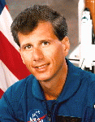

Lyndon B. Johnson Space Center
Houston, Texas 77058
|
National Aeronautics and Space Administration Lyndon B. Johnson Space Center Houston, Texas 77058 |
 |
Biographical Data |
||
Martin Joseph Fettman (B.S., D.V.M., M.S., Ph.D., Diplomate, ACVP)
Payload Specialist
PERSONAL DATA: Born December 31, 1956, Brooklyn, New York. Single. Recreational interests include scuba diving, amateur radio, flying, bicycling, pistol marksmanship, camping and mountain hiking, photography, travel, reading (mysteries), and music (jazz and classical). His mother, Mrs. Elaine Fettman Peck, resides in Brooklyn, New York, with his stepfather, Mr. Harold Peck. His father, Mr. Bernard P. Fettman, is deceased.
EDUCATION: Graduated from Midwood High School, Brooklyn, New York, in 1973. Received bachelor of science degree in animal nutrition from Cornell University in 1976, doctor of veterinary medicine degree and master of science degree in nutrition from Cornell University in 1980, and doctor of philosophy degree in physiology from Colorado State University in 1982. He received board certification in veterinary clinical pathology in 1984 and is a diplomate of the American College of Veterinary Pathologists.
ORGANIZATIONS: American Academy of Veterinary Nutrition, American Association for Clinical Chemistry, American Association for the Advancement of Science, American College of Veterinary Pathologists, American Dairy Science Association, American Society of Animal Science, American Society of Gravitational and Space Biology, American Veterinary Medical Association, Association of Veterinarians for Animal Rights, New York Academy of Sciences, Shock Society, National Audobon Society (life), National Wildlife Federation (life), Nature Conservancy, Sierra Club.
PUBLICATIONS: He has published over 100 research articles in refereed scientific journals.
EXPERIENCE: Dr. Fettman's first faculty appointment was 1982-1986 in the Department of Pathology of the College of Veterinary Medicine and Biomedical Sciences at Colorado State University, as an Assistant Professor of Clinical Pathology whose duties included teaching, research, and clinical service. From 1983 to the present, he has held a joint appointment in the Department of Physiology at Colorado State University and his research and teaching interests have focused on selected aspects of the Pathophysiology of nutritional and metabolic diseases, with emphasis on the physiological biochemistry of energy, electrolyte, and fluid metabolism. In 1986 he was promoted to Associate Professor, and in 1988 assumed the duties of section chief of Clinical Pathology in the Veterinary Teaching Hospital at Colorado State University. Dr. Fettman spent one year (1989-1990) on sabbatical leave as a Visiting Professor of Medicine at The Queen Elizabeth Hospital and the University of Adelaide, South Australia, where he worked with the Gastroenterology Unit studying the biochemical epidemiology of human colorectal cancer. He was appointed to the Mark L. Morris Chair in Clinical Nutrition at Colorado State University and received a joint appointment in the Department of Clinical Sciences in 1991, and was promoted to Full Professor of Pathology in 1992. Dr. Fettman is a George H. Glover distinguished faculty member of the College of Veterinary Medicine and Biomedical Sciences and was named the 1994 Sigma Xi honored scientist at Colorado State University, the 1994 Spencer T. and Ann W. Olin Lecturer at Cornell University, and a Bard College Distinguished Scientist for 1995.
NASA EXPERIENCE: In his first affiliation with NASA, Dr. Fettman was selected as a payload specialist candidate in December 1991, as the prime payload specialist for Spacelab Life Sciences-2 in October 1992, and flew on STS-58 in October 1993. Since the flight, he has made over seventy public appearances representing space life sciences research before higher education, medical, veterinary, and lay organizations, and visited over twenty K-12 schools around the United States and Canada. He is presently a member of the NASA Advisory Council Life and Biomedical Sciences and Applications Advisory Subcommittee.
JUNE 1995
This is the only version available from NASA. Updates must be sought direct from the above named individual.
{kind=link}